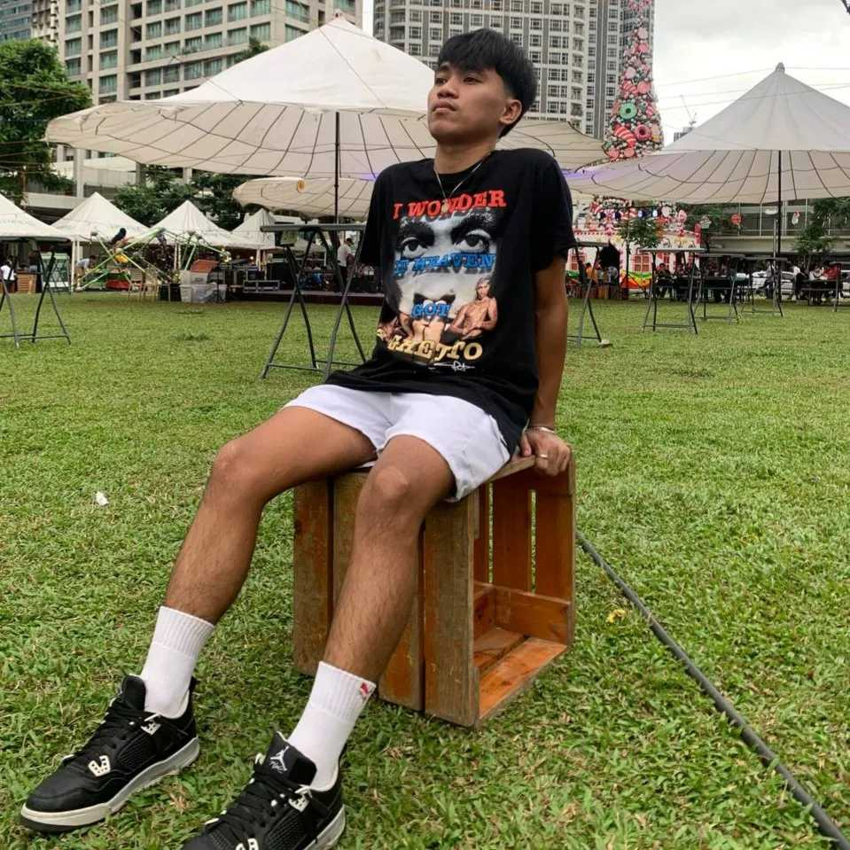

I'm Ramir Neri your tech, and I'm 21 years old from Pineda Pasig City currently studying at Rizal Technological University 2year college IT Student,
also at this my age I'm a part-timer working student at "GEEKSJOINT" company a computer and laptop repair shop, and I'm excited to have my own
computer and laptop repair shop and other peripheral parts to purchase and I called it a "SALTECH" company. But my priority now is to finish my study first
so I can fulfill this my goal in the future and to have a great job, to have a good business to be a good businessman. I want to achieve this my goal to give it back all my
parent's sacrifices and to have a good life.